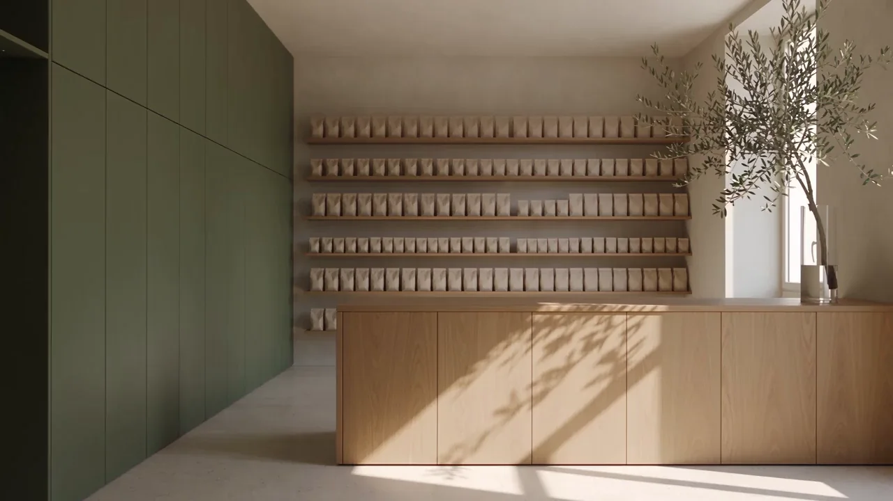

Elettrocardiogramma
ECGRegistra l’attività elettrica del cuore con elettrodi applicati sulla pelle.
Informazioni e contatti
Per modalità di accesso, disponibilità, preparazione e tariffe, contatta la farmacia.
Parma · Quartiere Montanara
Per chi abita, lavora o passa da Montanara. Consigli, prodotti e servizi per la tua quotidianità.
60anni a Parma1966 — 2026

Ponte Dattaro / Parma
Uno sguardo in farmacia
Scorri. Il film segue il tuo gesto.
Scena illustrativa IA
01 / I servizi in farmacia
Cuore, pressione, pelle. Scopri il servizio e parla con la farmacia per modalità e disponibilità.
Scopri il servizio. Chiedi alla farmacia.Registra l’attività elettrica del cuore con elettrodi applicati sulla pelle.
Per modalità di accesso, disponibilità, preparazione e tariffe, contatta la farmacia.
In farmacia puoi chiedere una valutazione a distanza per un problema della pelle.
Per modalità di accesso, disponibilità, preparazione e tariffe, contatta la farmacia.
Misura la pressione arteriosa a intervalli durante le normali attività quotidiane.
Per modalità di accesso, disponibilità, preparazione e tariffe, contatta la farmacia.
Registra il ritmo del cuore mentre svolgi le attività di ogni giorno.
Per modalità di accesso, disponibilità, preparazione e tariffe, contatta la farmacia.
Hai una domanda o non sai da dove iniziare?
Parliamone insieme02 / Le persone, il quartiere
Siamo a Parma dal 1966. In Strada Montanara dal 1988. Una presenza quotidiana per chi vive il quartiere e per chi lo attraversa.
Per un consiglio, un servizio o i prodotti di ogni giorno. Anche una domanda è un buon inizio.
Piccoli gesti. Tante attenzioni.
Visioni illustrative IA. La scena storica non è una foto d’archivio.
Un consiglio su misura
Prima di passare
Una domanda pratica? Qui trovi da dove cominciare.
Parla con la farmaciaChiama o scrivi alla farmacia per conoscere disponibilità, modalità di accesso, eventuale preparazione e tariffe del servizio che ti interessa.
Chiama 0521 964011In Strada Montanara, 23/b, 43124 Parma (PR), nel quartiere Montanara. La sede attuale è qui dal 1988.
Indirizzo e indicazioniContatta direttamente la farmacia per verificare gli orari prima di passare.
Chiedi gli orariPuoi chiamare, scrivere su WhatsApp o inviare un’email. I collegamenti aprono i canali della farmacia; questa pagina non conferma prenotazioni.
Apri WhatsApp03 / Ci trovi qui
Contattaci per gli orari aggiornati e la disponibilità dei servizi.